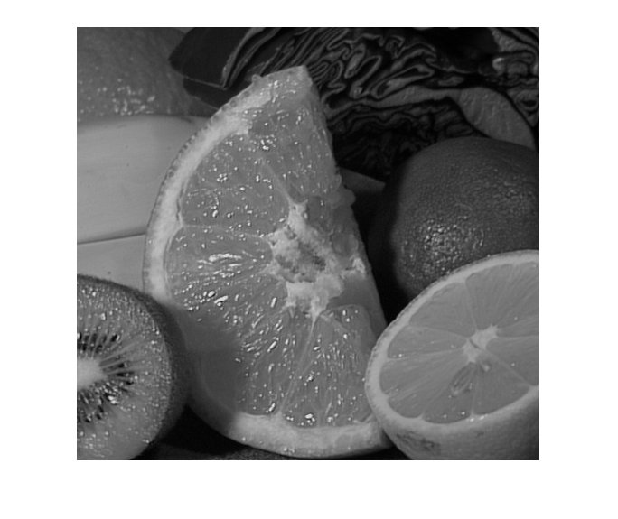
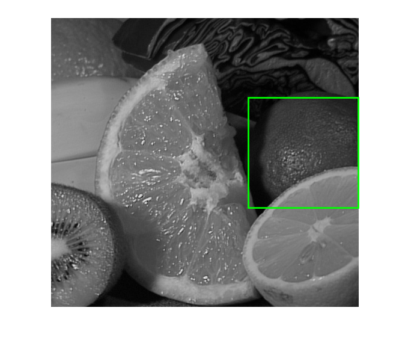
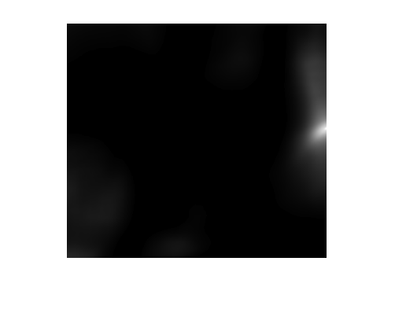

Interactive Rectangle Selection
Demonstrate using a mouse to interact with an image. Allows the user to select parts of an image with a mouse. When they let go of the mouse, it correlates (using cv.matchTemplate) that patch with the image.
The sample uses the RectSelector class.
Sources:
load and show image
fname = fullfile(mexopencv.root(), 'test', 'fruits.jpg'); img = cv.imread(fname, 'Color',true); gray = cv.cvtColor(img, 'RGB2GRAY'); hImg = imshow(gray);
prompt user to select ROI rectangle
disp('Select part of the image using the mouse'); if true roi = RectSelector(hImg); roi.clip = true; setLineProps(roi, 'Color','g', 'LineWidth',2); rect = wait(roi); delete(roi); else roi = imrect(ancestor(hImg,'axes')); setColor(roi, 'g'); rect = wait(roi); delete(roi); end assert(~isempty(rect), 'No selection'); rectangle('Position',rect, 'EdgeColor','g', 'LineWidth',2)
Select part of the image using the mouse
extract patch and perform template matching against image
tmpl = cv.Rect.crop(gray, rect); res = cv.matchTemplate(gray, tmpl, 'Method','CCoeffNormed'); res = abs(res).^3; res = cv.threshold(res, 0.01, 'Type','ToZero'); res8 = cv.normalize(res, 'Alpha',0, 'Beta',255, ... 'NormType','MinMax', 'DType','uint8'); figure, imshow(res8)